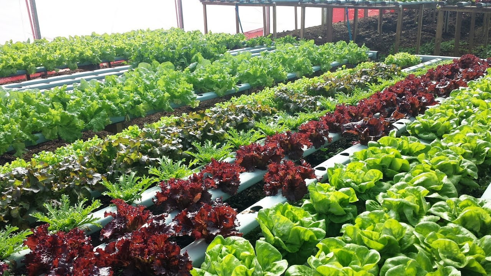

Em uma situação de crise econômica, guerra ou instabilidade, a melhor maneira de se manter em conta, é sobrevivendo por meios alternativos, e cultivando suprimentos necessários para sua sobrevivência. E nisso se releva a importância do plantio de hortaliças para quem quer ter um meio seguro de alimentação. Com esta idéia em mente, esta categoria vai cubrir as Verduras, suas vantagens, quais tipos, como plantar e seu valor alimentício.
Em um plantio de verduras, se observa uma grande facilidade para conseguir suas múdas ou fazer sua cultivação, devido a fácil adaptação destas hortaliças aos terrenos pequenos, tornando um tipo de plantação prática e sustentável.
Os métodos de plantio das verduras são simples e fáceis de serem replicados. Onde você vai precisar de apenas um vaso, um pote com terra adubada ou espaços com 1 metro para começar o tratamento da terra.
Dentre os vários tipos de verduras se destaca o Alface, chicória, agrião, rúcula como os mais comuns.
Este artigo vai cobrir os respectivos plantios e métodos de cultivação abaixo:
A semeadura no canteiro deve ser feita em sulcos paralelos, distanciados de 8 a 10 centímetros e com profundidade de 1 centímetro.
Gastam-se, em média, 3 gramas de sementes por metro quadrado de canteiro, o que equivale a um gasto de 500 gramas para produção das mudas necessárias ao plantio de 1 hectare.
Para garantir o cultivo mais seguro da espécie, recomenda-se que as suas sementes sejam plantadas em sementeira ou em pequenos vasos, sendo que elas não devem ser colocadas em covas que tenham mais de 1 cm de profundidade.
Já entre covas é preciso garantir em torno de 10 cm de distância uma da outra.
O Agrião propaga-se por semente, com plantio no verão ou na primavera, com espaçamento de 15 centímetros entre mudas.
Por ser uma planta que gosta muito de água, plante-o sem medo de encharcá-los.
Certifique-se que o solo seja fértil e que o pH é seja de neutro à levemente alcalino.
Há dois métodos: diretamente no canteiro definitivo ou em bandejas; em ambos deve-se manter de 15 a 25 centímetros de espaçamento entre linhas.
Na semeadura direta, usa-se apenas 0,2 grama de semente por metro linear. Em bandejas, o indicado é usar, em cada célula, de quatro a oito sementes, que germinarão entre três e quatro dias.
Nas horas mais frescas do dia, faça o transplante assim que a muda apresentar de três a quatro folhas.
Sem contar que as hortaliças verdes e folhosas, são ricas em cálcio, ferro, vitamina C e pró-vitamina A: